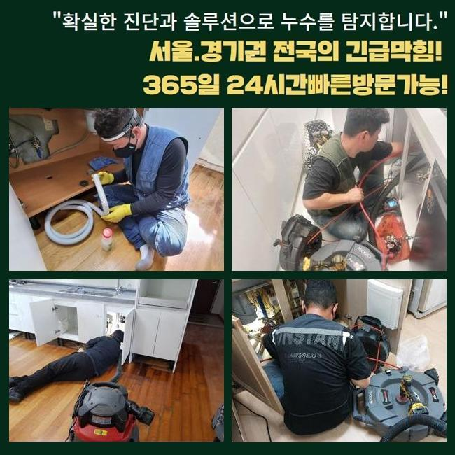
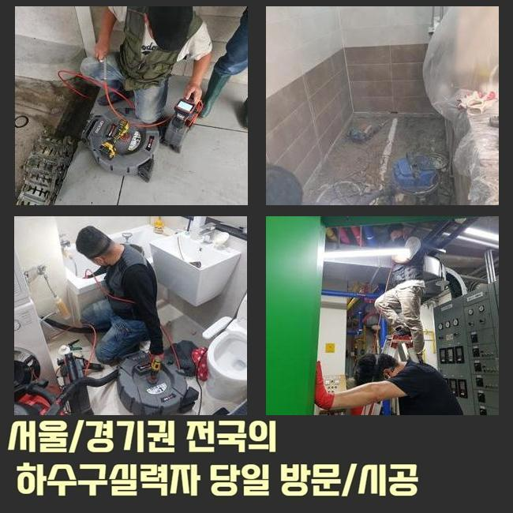
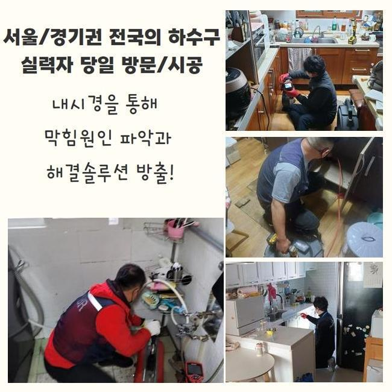
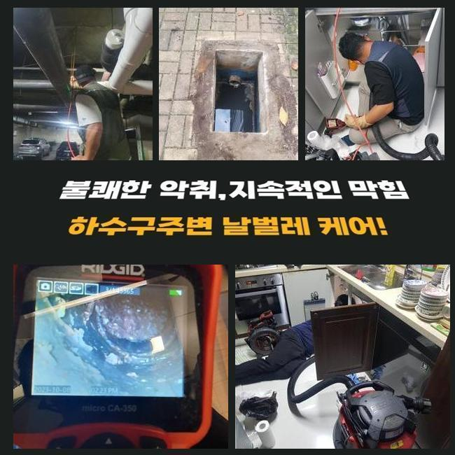
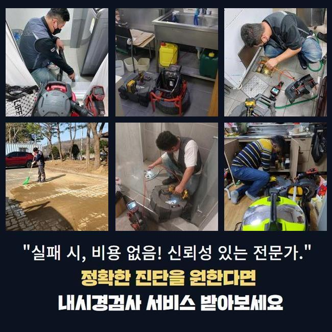
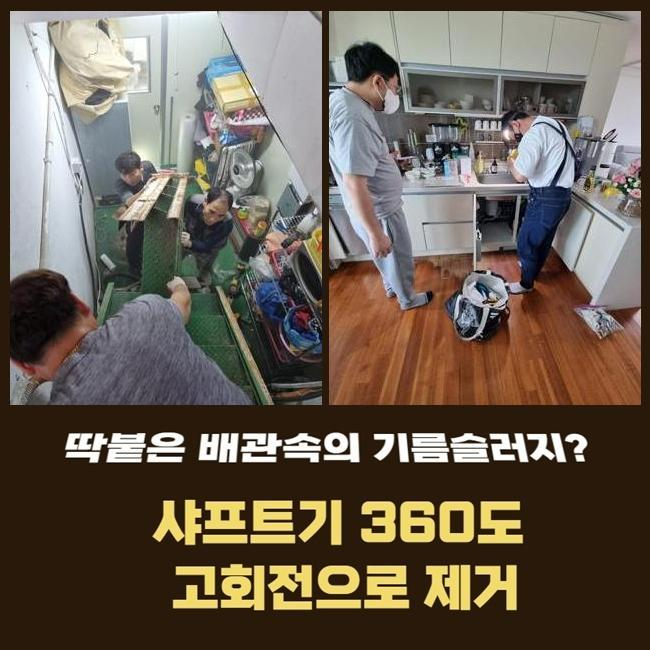
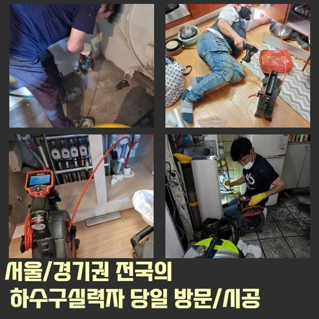

🏠 수원 팔달동세탁기배수구막힘 고등동 하수구청소 물샘전문업체
수원 하수구막힘 전문 시공 후기

📋 작업 개요
- 위치: 수원
- 서비스 유형: 하수구막힘, 배관막힘, 누수수리, 역류해결, 뚫는업체, 배관청소
- 작업 일시: 2025. 2. 7. 11:12
- 업체명: 하수구수사대 (010-5615-2118)
🔍 문제 상황
수원 팔달동세탁기배수구막힘 고등동 하수구청소 물샘전문업체
주방이나 욕실은 일상에서 필수적인 곳인데요
따라서 이용하시다가 급작스레 물빠짐이 안된다면 불편은 상당하겠죠
그러나 배수기능이 약해지는 것에 대해 무시하고 넘어가시는 의뢰인분들이 많더라고요
얼마 뒤에 증세가 사라지거나 추가적으로 문제가 생기지는 않을거라고 간주하기 때문이죠
반면 실상은 판이합니다
그와 관련지어 그것들이 발현되었을 때 즉각적으로 소제한다면 심각한 사태를 방지할수 있어요
배수가 천천히 이루어진다는건 관로의 어딘가에 흐름성에 장애를 일으키는 슬러지가 상존한다는 이야기에요
이물들이 추가적으로 누적돼 한층 까다로운 장애로 발달하기전 기술자를 찾아서 조사를 시행한뒤에 체계적으로 뚫어야 하겠죠
저번주에 해결한 곳을 세부적으로 말씀해드리도록 하겠습니다
비슷한 증상으로 빠른 수습을 원하시는 분들께 조금이나마 도움됐으면 하네요
저희팀이 내방한 곳은 빌딩의 1층에 자리잡은 분식집이었습니다
의뢰자께선 욕실과 개수대공간까지 점차적으로 물흐름이 멈췄다고 말씀하셨죠

🔎 원인 분석
💡 전문가 진단: 정밀 진단 장비를 사용하여 슬러지의 고착 여부를 판명하고 타격/세척 작업을 실시했습니다.
100% 멈춘건 아니었으며 하루지나면 빠져나가는 모습을 보였기에 나중에 처리하자 생각하고 영업하고 있으셨다고 하네요
그래서 결국에는 이물의 양이 증대되어서 배수가 멈추었고 물이 역류되는 사태까지 일어나게 된거죠
배관구조는 난해하고 비좁게 되어있어요
따라서 표면적으로 볼때에는 노폐물이 얼마큼 존재하는지 간파하기 어려워요
그래서 방문지로 이동하기 전에는 내시경설비를 필수적으로 소지해야 해요
내시경기기의 끝부분엔 전용카메라가 있어요
그것을 이용해 직관하기 어려운 하수관 안쪽까지 명확하게 확인할수 있으며 이물의 특성까지 알수있는 거예요
이것으로 확인해보니 하수관 안은 굉장히 더러웠습니다
석회물질을 비롯하여 다양한 이물들이 적체되어 있었어요
이런 오염물질들이 들러붙어 움직이지 않는 상태로 바뀌어 좁다란 하수관구멍을 틀어막아 물빠짐이 올바르게 될수가 없었답니다
이것을 방치해버린다면 크기를 더욱더 키워가며 관로에 하중을 가할수 있죠
그리된다면 한층 정황이 나빠지는 것이기에 조속히 고쳐야 했죠
이럴 때에 쓰는 기기는 샤프트입니다

🔧 작업 과정
좁아진 배관틈으로도 쉬이 진입가능한 이점이 있죠
장비끝에는 노커라는 쇠붙이가 붙어서 고속으로 돌아가면서 하수관내에 잔류하는 굳어진 잔재들을 분쇄해주죠
바로 이물분쇄업무를 실시하였어요
전동기기와 노커를 연결하고 나서 플렉스샤프트를 작동시켜서 벽면에 붙은 찌꺼기들을 소멸시키기 시작하였죠
어떠한 지점에 잔존물들이 분포되어 있나 파악해야 하므로 내시경카메라를 활용한 관찰도 같이 하였습니다
이것을 통하여 적체량이 많은장소를 우선해서 작업한다면 한층 신속하게 끝마칠수 있어요
배관의 벽면이 훼손되는일이 없도록 조심하면서 이물질만 정확히 조준하여 분쇄를 해나갔죠
만약 작업중에 배수관에 압력을 준다면 파열이 일어나서 누설증세가 발발할수도 있어요
그렇기에 내시경설비나 분쇄기기가 준비되는것도 중요한 요소이지만 작업자의 기술수준도 훌륭해야 하겠죠
슬러지가 집중된 구역을 청결하게 소제한뒤에 미미한 파편들까지 없애주었죠
그후에 즉각 테스트를 해보았죠
많은양의 오수를 일시에 배수문으로 쏟았으며 체류하거나 역류증세는 없나 진단했답니다
별다른 특이사항은 없었으므로 즉각 근접한 배수설비로 넘어갔습니다
이쯤해서 마무리 짓는다면 즉시 쓰시기엔 괜찮을수 있으나 몇달뒤 막힘증세가 발현될 여지가 상존하기 때문이었답니다
화장실의 관로와 이어진 횡주관도 조사하여 노폐물 누적 상황을 알아보기로 했죠
화장실의 배관에서 정체가 나타나면 관련된 메인관까지 이물들이 적층되었을 가망성이 높기에 전반적 배수관 정비를 수행하는게 바람직하답니다
그래서 횡주관에 접근하여 관측을 시작하였고 저희들의 예측대로 고착화된 이물들을 목도할수 있었죠
횡주관과 관련된 개별배수관까지 전반적으로 샤프트장비를 이용하여 정비하였고 이물질이 사라진 말끔해진 하수관을 목도할수 있었죠
플라스틱 등의 녹기어려운 폐기물들은 일상중에 다시 쌓일 수 있죠
그래서 6개월에 1회 정도는 배관전문가를 통해 관리하시는게 좋답니다
더불어 일상중에 배수관을 보존하는 대책들도 쉬이 이해하시도록 잘 안내해드렸죠


✅ 작업 완료
배수관이 막혀버리면 삶에 큰 고충을 감내해야 하기에 애초에 그러한 일이 안나타나게 꼼꼼하게 예방을 시행하는게 합당합니다
휴일에도 영업한다는 내용도 안내드렸죠
구축 아파트에서는 누수증세도 빈번히 일어나므로 이에 대한 수선의뢰도 많죠
이에 바로 뚫음뿐만 아니라 누설수리도 하고있다는걸 설명드렸답니다
어디에서 고장이 생겼고 언제 시작되었는지 사전에 알려주신다면 더 빠르게 상담해드릴 수 있습니다
그후 말씀해주신 시각에 담당자가 도구들을 챙겨서 방문드리니 필요시 연락주시길 당부드려요




⚠️ 베란다 누수 및 방수 관리 방법
- ✅ 비가 많이 올 때 창틀 주변이나 아래층 천장에 얼룩이 생기는지 정기적으로 확인해 보세요.
- ✅ 우수관 주변 실리콘 마감이 들뜨거나 깨진 틈새가 있는지 손상 여부를 수시로 체크하세요.
- ✅ 베란다 바닥 타일의 줄눈(메지)이 소실되면 그 틈으로 물이 침투하여 누수가 유발됩니다.
- ✅ 누수 의심 증상 발견 시 방치하면 아래층 손실이 커지므로 즉시 전문가의 진단을 받으십시오.
💡 핵심 정리
- 확실한 장비 작업(내시경 점검 및 샤프트 스케일링)으로 원인을 뿌리 뽑습니다.
- 작업 후 1년 이내에 동일한 부위 재발 시 100% 무상 A/S 서비스를 보장합니다.
- 서울 · 경기 · 인천 전 지역에 24시간 언제든 긴급 출동할 수 있도록 항시 대기 중입니다.
❓ 자주 묻는 질문 (FAQ)
🚨 수원 하수구막힘 문제로 고민이신가요?
정확한 원인 진단과 확실한 시공으로 재발 없는 해결을 약속드립니다.
24시간 긴급 출동 | 서울 · 경기 · 인천 전지역 | 1년 내 재발 시 무상 A/S